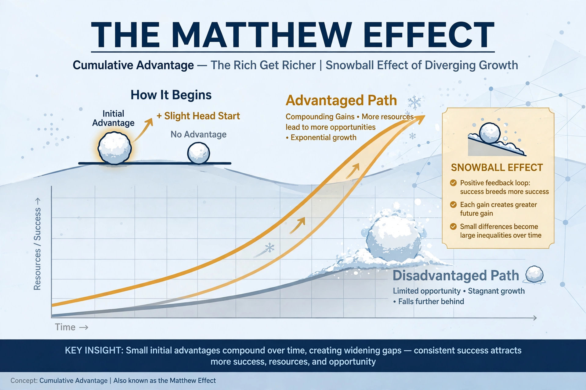

The Matthew effect is the observed phenomenon by which an initial advantage leads to further advantages and an initial disadvantage leads to further disadvantages — summarised as "the rich get richer and the poor get poorer." Sociologist Robert K. Merton coined the term in 1968.

Merton named it after the Parable of the Talents in the Gospel of Matthew: "For to everyone who has, more will be given." In science, eminent scientists receive disproportionate credit for collaborative or similar work.
The effect applies in education (early reading advantage), economics (cumulative wealth), and networks (preferential attachment). The related Matilda effect describes bias against women in science, named for Matilda Joslyn Gage.